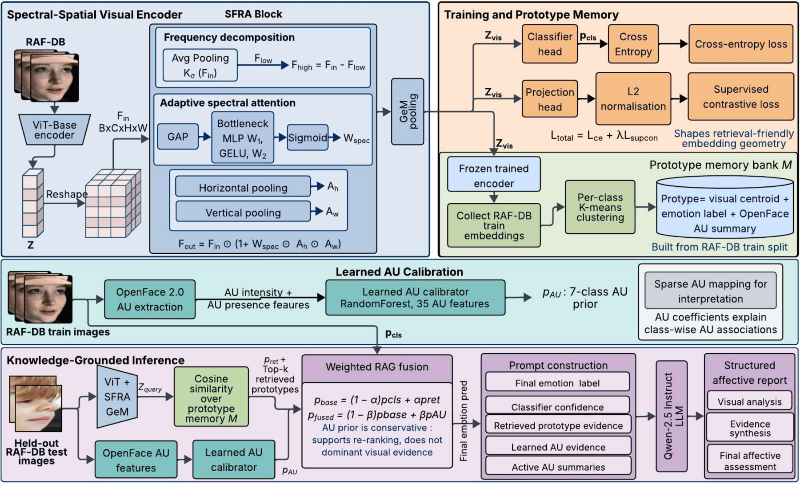
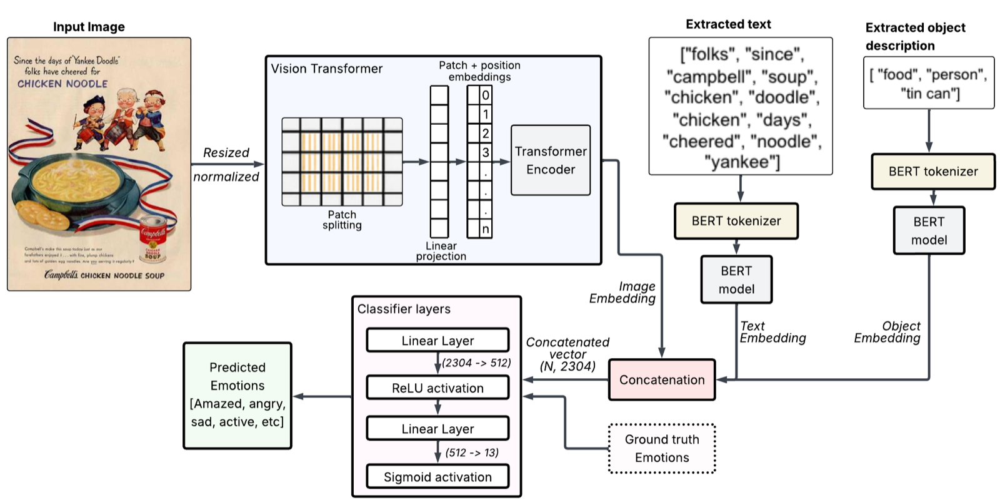
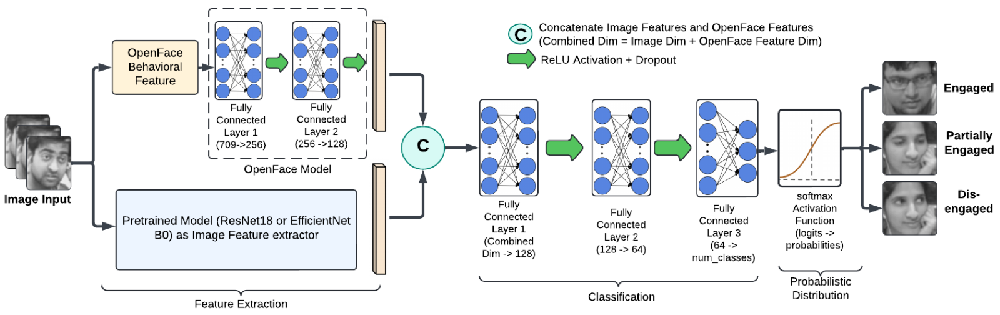

SIGNAL / FACE + MOTION
Reading engagement and affect from visible behaviour.
Models combine facial appearance, Action Units and behavioural dynamics to recognise emotional state, student engagement and dimensional valence–arousal.
Final-year PhD researcher · Dublin
I’m Riju Das, a computer vision researcher at University College Dublin. My work connects affect recognition with visual reasoning, language and inspectable evidence—across faces, scenes and human behaviour.
01 / Research atlas
How can visual systems move beyond assigning an emotion label to understanding what the label means, where it comes from and how it can be communicated?
SIGNAL / FACE + MOTION
Models combine facial appearance, Action Units and behavioural dynamics to recognise emotional state, student engagement and dimensional valence–arousal.
CONTEXT / SCENE + LANGUAGE
Emotion-aware captioning and adaptive multimodal models connect people, objects, colour and scene context with language that conveys affective meaning.
REASONING / CUES + RETRIEVAL
Spectral-spatial representations, prototype retrieval and Action Unit evidence support structured reporting—so predictions can be examined rather than merely accepted.
02 / Selected work
Selected projects spanning recognition, multimodal interpretation and evidence-grounded visual intelligence.

Open architecture ↗A spectral-spatial visual encoder with prototype retrieval, learned Action Unit priors and constrained reporting for grounded facial-expression analysis.

Open architecture ↗An adaptive multimodal network for understanding emotion in visual content by combining complementary scene-level information.

Open architecture ↗Frame-level and behavioural approaches for recognising engagement in learning environments using visual appearance and facial Action Units.
An AFRN–RAG framework combining adaptive feature recalibration for facial-expression recognition with retrieval-grounded mental-health support reporting.
03 / Recent publications
AICS 2025
P. Miao, S. Li, K. Cai, Y. Tian, R. Das, I. R. Nijhum and S. Dev
Neural Computing and Applications
R. Das and S. Dev
IMVIP
R. Das, S. Dhang, M. Zhang and S. Dev
Multimedia Tools and Applications
R. Das, N. Wu and S. Dev
Applied Intelligence
R. Das and S. Dev
IET Conference Proceedings
R. Das, S. Dhang and S. Dev · Best Poster Award, ADAPT Annual Scientific Conference 2026
04 / Research & teaching journey
University College Dublin and Beijing-Dublin International College, Beijing, China
Researching visual emotion understanding; supporting computer-science teaching; supervising final-year work in emotion-aware caption generation and exchange-student research on culturally variable facial emotion recognition.
Jorhat Engineering College, Assam, India
Taught computer science, guided projects and hackathon teams, contributed to accreditation, and led a funded multi-institution machine-learning project as Principal Investigator.
College of Technology and Engineering, Udaipur, India
Delivered theory and practical teaching, guided student projects, mentored a hackathon team and supported departmental development.
Asian Institute of Management and Technology, Guwahati, India
Delivered computer-science teaching, mentored students and helped organise departmental academic activities.
05 / Beyond the lab
Academic work extends beyond papers: it includes teaching, peer review, student supervision and participation in international research communities.
ADAPT Centre Fifth Annual Scientific Conference
Power System and Renewable Energy track · IEEE WIECON-ECE
Una Europa Summer School · University College Dublin
Peer reviewer for international journals and conferences in AI, computer vision and related areas
06 / Capabilities
Affective computing · Computer vision · Deep learning · Multimodal learning · Vision-language models · Retrieval-augmented generation · Transfer learning · Model interpretability
PyTorch · TensorFlow/Keras · scikit-learn · Hugging Face · Vision Transformers · OpenCV · OpenFace · MediaPipe · Object detection · Image processing
Python · JavaScript · HTML/CSS · NumPy · Pandas · Matplotlib · Git · CUDA · LaTeX
07 / Let’s connect
I’m open to research and R&D conversations in affective computing, computer vision and multimodal AI.
riju.das@ucdconnect.ie